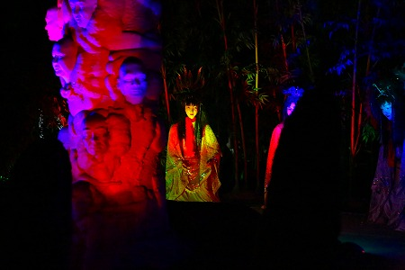
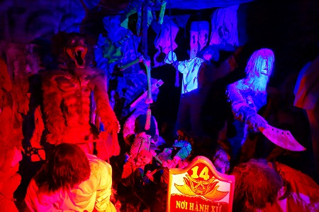
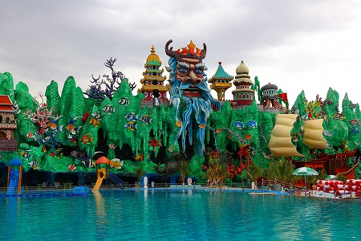

越南珍寺劇場2、最後はホーチミンに乗り込んで、あの
ソイテンパークのパトロールで締めたいと思う。
ソイテンパークとはホーチミン郊外にある
アジア最狂のテーマパークである。
その奇天烈っぷりは先日訪れたシンガポールのタイガーバームガーデンと双璧を成すと言ってもいいだろう。
14年前に訪問した際は日本では全く無名だった施設だが、ワンダーワールドという雑誌で紹介させていただいたのをきっかけに色々な方がメディアで紹介されたようで、今ではすっかりホーチミンいちの珍奇スポットになってしまったようですね。

そんなソイテンパークの現在を確認しようと勝手にパトロールにやってきましたよ。
果たしてアジア最狂のヤバ過ぎテーマパークの現状や如何に。
地元の遠足っ子の列にビビりつつ入場する。
入場料は少し上がったような気がする。
巨大な獅子がお出迎え。手前の子供たちと比べられたし。
相変わらずベトナムっぽさをベースにかなり振り切った装飾をかましてくれている。

以前はなかったドクターフィッシュコーナー。
巨大な千手観音がお出迎え。
裏側は巨大な仏像のレリーフ。
横から見るとこんなです。
様々なアイテムが何の脈絡もなく延々と続く。嗚呼、やっぱここサイコ—だわ。
シンデレラ城、的な城。
色々な意味でテーマパークという概念を覆してくれる。素晴らしい。
そもそもテーマがない！というかあったとしてもテーマがとっ散らかりすぎで「ここは何のテーマパークなのか？」が非常に判りにくいのだ。
とにかくチビッ子の遠足が多い。
世界屈指の奇天烈遊園地に遠足とは…羨ましすぎ。
園内のあちこちに毒々しい色の造花がある。
水上ライド。

舟に乗って水の上を流れていく見流し型のライド。
ココもまた独特の世界観に彩られていた。
いちいち建物を顔とか龍とかにしたがるなあ。
中は仏像が並んでました。
何故巨大な狛犬が何体も並んでいるのか、何の意味があるのか。
…そんなことをいちいち考えていたらここでは生きていけません。
土産コーナー。
オリジナルＴシャツやマグカップなどが売っていた。
ちなみにここで買ったソイテンパークオリジナルのマグカップは帰国後1か月もしない内にプリントした部分が全部剥がれちゃいました…。
今度は地獄巡り。

閻魔様の裁きから始まり、様々な責め苦が続く。
確か18大地獄だった。
お化け屋敷顔負けの、というか
お化け屋敷そのものでした。

前回もそうだったが、若い女の子たちが気が触れたように絶叫している。
そっちの絶叫の方が怖いんですけど…。
這う這うの体でお化け屋敷、じゃなくて地獄巡りから逃げ出してくるチビッ子だち。
ホントここは顔型の建物が好きだなあ。
園内のあちこちには意味不明な巨大な豆物が並んでいたり…
突然変異したかのような巨大で毒々しい花が並び…
カットされた果物が並んでいたり…
脇役なのに主役級の自己主張。
一体どうしろと言うのだろう？いや、意味なんて考えちゃいけないんだ、ここはシュールの楽園なんだから。
売店も見逃せない。
パチ玩具の宝庫だった。
数少ない遊園地っぽい風景。
でもこんな。
そしてソイテン名物
ワニ釣りコーナーに向かう。
ワニが釣れる施設なんてここ以外にあるのだろうか。
本物のワニの中につくりもののワニを配置するセンスよ。
さて。ワニ釣るか。
幾ばくかの金を払うと、係員の人が先に生肉が付いた釣竿を持ってきてくれる。
コレでワニを釣ろうというわけ。
同行者がチャレンジ！
そーっと肉をワニの鼻先に持っていくと…
バクッ！
あ〜あ。持ってかれちゃった〜。
考えてみたら針もない状態で釣れるはずもないのだが、
釣れたら釣れたで困るのでまあ、いいです。
他でもあちこちで釣りと言う名の
お肉献上が繰り広げられていた。
さらに園内をそぞろ歩き。

見世物が行われるであろうステージ。
アンコールワット風の建物。
目つきが悪いスワンボート。
悪い夢に出てきそうなキノコ。
こういう脈絡も節操もないところがここソイテンパークの最大の魅力なのだ。
バイクの人が食われそう…。
ド派手で巨大な龍がのたうち回っている。
ホント、ベトナムの人は龍が好きだなあ。
なんと9Dシネマとな。
早速ブースに座って体験してみたのだが、9Dの内4つは良く判らなかったです…。
ちなみに1,2,3,4Dあたりまでは日本の映画館にもあるのでお判りいただけると思う。
5Dは途中で飛んでくる水で、6Dは目の前にある扇風機の風で、7Dはすぐ隣にいる従業員のやかまい喋り声で8Dは近くで遊んでいるベトナム人のガキンチョがブースを蹴っ飛ばしてくる振動だと思います。
そして9つ目のDはこのテーマパーク自体を覆い尽くすねっとりとした湿気ではないでしょうか。
仏教説話に即した展示が多いところがチビッ子たちには兎も角、私の琴線には触れまくりなのである。
こういうポーズを臆することなく取れるのが本当のコスモポリタンなんじゃないのか、と最近つくづく思います。
ベトナムの昔話かなにかに出てくるワンシーンなのだろうか。さっぱり判らない。
そんなモノに線香が手向けられているのを見ると、世の中知らないことだらけだなあ、と妙に感じ入ったりしてしまう。
ベトナムでも人気のハリーポッターをテーマにした館。
コレは新しいアトラクションだったが、激つまらなかったっす…。
傍から見れば狂乱のテーマパークだが、サイゴンの人にしてみれば、いわばディズニーランドに行くようなもの。
なのでキメキメなファッションの方も多い。
ある意味ベトナムでは数少ない「夢の国」なのだ。それが悪夢だろうが淫夢だろうが。
夢は人によってそれぞれだ、それが金だったり、
宗教的愉楽だったり。
あらゆる人にとって夢の国であるためにはこれくらいとっ散らかっていた方が良いのかもしれない。ね。
そんなこんなでこのソイテンパークの最大の見どころであるプールエリアへ。
どんよりとした曇り空にも負けない強烈なインパクト。
以前は茶色だった髭のお方は何故か灰色になっていて若干地味な印象。
しかしその他は相変わらずのこてこて楽園。
周りが濃すぎて泳ぎに集中できないです。

まるでオイルかコンクリートの海で泳いでるかのようなねっとり感。
でもそれがまた気持ちいのだよ。
怪獣の口は勿論スライダーの出口です。
メインの髭の人の中はぐにゃ〜んとした休憩所になっている。
以前は上の階まで登れたのだが、何故か登れなくなっていた。
悪夢のようなスライダー。
たかがプールにここまでチカラ込めるって。ホント凄い。
実はここも某珍寺エージェントから工事中で入れない箇所があるかも、との報告を受けていたのだが、改修工事はほぼ終わっていた。
むしろあちこち綺麗に塗り直されてグッドコンディションだったので良かったです。
願い事を書いたと思われるプレートが鈴なりに。
そんなこんなで1日中遊んでしまいました…。
帰りは目の前のバスに乗ってホーチミン市内に向かったが、何故かとんでもない郊外に連れて行かれる羽目に。
結局、その辺の兄ちゃんに車を出してもらい、這う這うの体でホーチミン市内に戻ってきたのであった。
というわけでベトナムの修行、この辺でお開きにさせていただきますよ。
おしまい